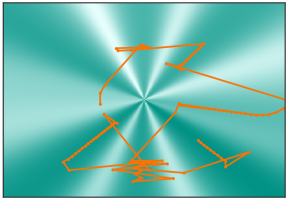
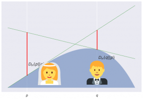
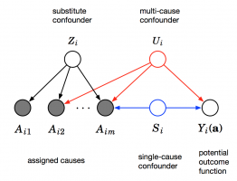
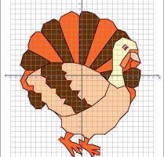
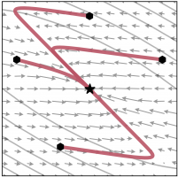
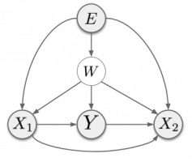

Very interesting post. However I find the Improved GAN https://arxiv.org/abs/1606.... also add Gaussian noise to the input of the discriminator. They said in the paper that "... and add Gaussian noise to the output of each layer of the discriminator". However they actually add noise also to the input. Here is the code https://github.com/openai/i....
Also on inFERENCe
👻Halloween Special: Critical reviews of …
- 2 years ago
- 1 comment
Boo. I scared you, didn't I?...

Exponentially Growing Learning Rate? …
- a year ago
- 1 comment
Yesterday I read this intriguing paper about the midboggling fact that it is …

Grosse's challenge: duality and …
- 3 years ago
- 11 comments
I wrote this post in response to a challenge by Roger Grosse: Theorem 2 of …

The Blessings of Multiple Causes: …
- 2 years ago
- 2 comments
Happy back-to-school time everyone! After a long vacation (in blogging …
On Marginal Likelihood and Cross-Validation
- a year ago
- 1 comment
Here's a paper someone has pointed me to, along the lines of

Thanksgiving Special 🦃: GANs are Being …
- 3 years ago
- 2 comments
In the spirit of thanksgiving, let me start by thanking all the active commenters …

Notes on the Limitations of the …
- 2 years ago
- 7 comments
This post is a short not on an excellent recent paper on empirical Fisher …

Invariant Risk Minimization: An …
- a year ago
- 25 comments
I finally got around to reading this new paper by Arjovsky et al. It debuted …
- Recommend Recommended 13
- Find More Discussions
Discussion Recommended!
Recommending means this is a discussion worth sharing. It gets shared to your followers' Disqus feeds, and gives the creator kudos!
- TweetShare
- Sort by Best

Etienne Vos • 2 years ago see moreFerenc Huszar Thanks for the great post. One very simple (maybe unrelated) question that I have is: Should the output of D(.) for real and fake samples converge to 1 and 0, respectively, as in your figure showing the annealing of sigma? Or should D(.) converge to 0.5 for both real and fake... can't seem to grasp what is the preferred behaviour.
Ferenc Huszar Mod Etienne Vos • 2 years ago see moreSo, ideally, your generator should match the data distribution exactly, at which point the discriminator D should be unable to differentiate between the two classes, so it should output 0.5. This is the desired long-term outcome.
However, the generator can never be precisely the same as the true data distribution (model misspecification) so this state will probably never be reached. What's worse, because both the data distribution and the generator distribution tend to be highly concentrated on some manifolds, their actual KL divergence will be infinite, and in this case the discriminator would most likely converge to the 0-1 behaviour.
Adding instance noise prevents this 0-1 trivial solution from happening, because the noise-infused distributions always have finite KL divergence. Over time, if your generator can describe the data well, you should see the discriminator to converge or at least hover around very poor performance, i.e. outputting 0.5 most of the time.
Note that one interpretation of the Wasserstein GAN is that it avoids the 0-1 issue by forcing a Lipschitz-constraint on the discriminator, thereby making sure that the regularized discriminator is always informative.
Shengzhao Lei • 9 months ago see moreDoes it also work well if I use wGAN-gp with instance noise?
Tony • 3 years ago see moreVery interesting post! I would like to confirm whether in your super-resolution example, you directly add Gaussian noise to the real and fake images and then feed them into the discriminator? How about jittering the image a little bit? How is the training without the instance noise technique? Thanks!
zheng • 4 years ago • edited see moreWhat is the x-axis in the second last figure? the training progress for the discriminator with generator fixed? Is it different from the x-axis in the last figure, where I guess is the training progress for the entire network (i.e. both generator and discriminator)?
bobchennan • 4 years ago see moreHow to check whether GAN converges or not?
In the idea case according to Nash equilibrium the loss of discriminator and generator should be close. But in your case it is not.zheng bobchennan • 4 years ago see moreI guess you mean the second last figure? The y-axis is the probability if the discriminator judges a sample as real, instead of the Discriminator loss. So the figure shows an updated generator can fool the discriminator more with a higher probability to be judged as real. But the after the training, the discriminator can eventually evolve to lower its error probability.
qianhui zhang • 4 years ago see moreHow to understand the instability of gans?
Paul Balanca • 4 years ago see moreGreat paper on GAN and SR, really enjoyed reading it thoroughly!
I was wondering if the noise trick could be related to the high frequency noise which appear in your results. More precisely, by adding a white noise with uniform distribution in Fourier space, you tend to distort more the geometry of the manifold on the high frequencies component, and in fact, hide completely the prior statistical properties (from what I remember, textures noise have a usually a power tail in Fourier space). Hence, the discriminator can not be properly learnt, and over-rely on lower frequencies to do his job.
It would be interesting to see if adding correlated noise instead (i.e. such as fractional Brownian sheets, with Hurst index infer from data | my little favorite toys are never far away :) ), with approximately the good Fourier tail, would still help the training of the GAN but help to obtain a better discriminator and avoid the high frequency noise.
Or the other option is what I say is crap :)
Robert Pottorff • 4 years ago see moreIt looks like mathjax (or some other library) isn't quite working
Ferenc Huszar Mod Robert Pottorff • 4 years ago see morehmm, It is working for me... All of it or just specific parts. Can you share a screenshot, please?
Robert Pottorff Ferenc Huszar • 4 years ago see moreIt's working now!
Ferenc Huszar Mod Robert Pottorff • 4 years ago see moreThanks for pointing it out though. It sometimes breaks for some people but not consistently enough to pinpoint what the problem might be.